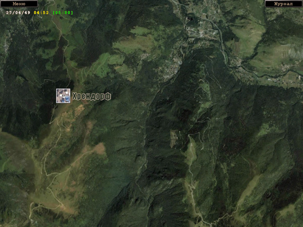
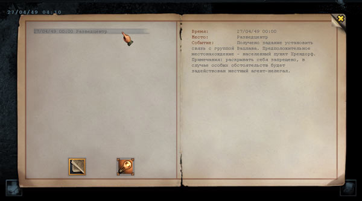
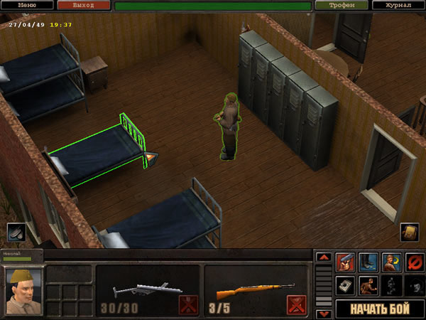
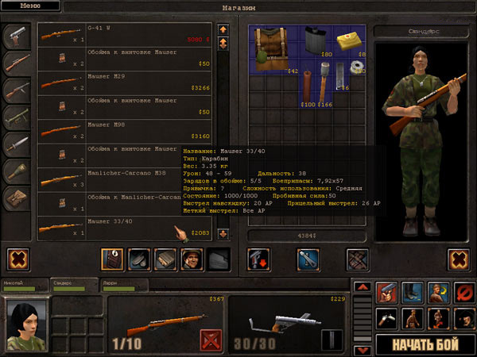
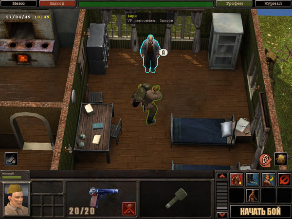

В игре «Серп и Молот» есть большое количество экранов, часть из них прямо связана с игровым процессом, другая часть выполняет вспомогательные функции. Все экраны можно отнести к нескольким группам:
Подсказки и «горячие» клавишиДля удобства игрока экраны содержат большое количество контекстных подсказок, которые выводятся рядом с курсором мыши при наведении курсора на тот или иной объект. Например, в экране настроек можно получить справку по назначению различных переключателей и регуляторов, на боевом экране — подсказки ко всем кнопкам игровой панели, в окне выбора предметов персонажа и экране магазина на базе — подробные характеристики оружия, на которое указывает курсор мыши, и т.д. Подсказки выводятся на полупрозрачном фоне. Хотя игра управляется в основном мышью, многие часто используемые функции, особенно на боевом экране, можно включать с клавиатуры. Эти клавиши упоминаются в контекстной подсказке при наведении курсора мыши на элемент управления. Использование «горячих» клавиш заметно облегчает игровой процесс. Список клавиш управления можно посмотреть в «Приложении». Карта регионаНа карте отображена часть западной оккупационной зоны Германии, где происходят события, относящиеся к нашей истории. В пределах региона ваша группа передвигается самостоятельно пешком или на доступном в данный момент виде транспорта. Текущее местоположение вашей группы отмечено мерцающей квадратной иконкой. Другие иконки указывают известные вам в данный момент места или населённые пункты, куда ваша группа может попасть. При наведении курсора на иконку она подсвечивается, рядом с ней выводится название местности или населённого пункта.  Кнопки «Меню» и «Журнал» позволяют вызвать игровое меню и просмотреть записи в журнале. Под кнопкой «Меню» находятся часы, показывающие дату и время. Вид часов аналогичен часам на боевом экране (во время пребывания на карте территорий внутриигровой отсчёт времени приостанавливается). Справа от часов зелёными цифрами в квадратных скобках выводится время перехода из текущего пункта в пункт, указанный курсором. Это время зависит от наличия у вас транспорта: пешие переходы занимают наибольшее время, а передвигаться на автомобиле можно намного быстрее. Чтобы выполнить переход в заданную зону, щёлкните по ней курсором-маркером. Периодически на карте региона могут выводиться документы, освещающие текущее положение дел в советской и западной оккупационных зонах. Эти документы не влияют на сюжет и игровой процесс непосредственно, но дают вам возможность лучше представить политическую обстановку и события того периода времени. ЖурналЖурнал содержит дневниковые записи, которые ведёт главный герой игры. В нём также находятся подсказки, помогающие освоить игровой процесс и интерфейс. Журнал можно вывести на экран в любой момент с помощью кнопки «Журнал» на верхней панели.  На левой странице журнала находится список заголовков и 2 кнопки переключения режимов. Для прокрутки длинного списка используется линейка, расположенная по правой кромке страницы. На правой стороне отображается информация, на заголовок или название которой указывает маркер. Кнопки переключения режимов позволяют вывести дневниковые записи или игровые подсказки. Каждая дневниковая запись на правой странице имеет стандартный формат: время записи, место (зона) и событие. Герой старается записывать в журнал все важные события (инструкции Центра, встречи и переговоры, полученные и выполненные задания, боевые эпизоды и т.д.). Особо важные сведения выделяются цветом. Информация о том, что в журнале появилась новая запись, выводится на боевом экране под строкой даты / времени. Рекомендуется читать новые записи по мере поступления, а при необходимости обращаться к ним снова — записи могут помочь в решении текущих задач, содержать указание или подсказку. БазаПонятие «база» в игре «Серп и Молот» во многом условно: действие происходит в чужой оккупационной зоне, где резиденты (если они существуют) глубоко законспирированы и не могут предоставить группе место постоянного пребывания. Будем считать «базой» то место, где главному герою удалось наладить отношения с кем-то из местных жителей и где группа может отдыхать, хранить различные вещи, а главный герой — поддерживать связь с Центром. По мере продвижения по сюжету местонахождение базы может меняться. Исследуя различные зоны и устанавливая контакты с различными людьми, рано или поздно вы найдёте тех, кто сможет оказать вам медицинскую помощь; тех, кто способен снабжать вашу группу оружием и снаряжением; всё это, разумеется, не безвозмездно. Место оказания медицинских услуг и магазин оружейника мы тоже будем условно считать частями базы, хотя в действительности они могут находиться на расстоянии друг от друга и даже располагаться в разных зонах. Комната отдыхаОсновное помещение базы — комната, где ваши персонажи могут остановиться и отдохнуть, — например, переночевать. Так выглядит комната отдыха в доме Конрада (будет ли ваша база в этой комнате или в другом месте, зависит от развития сюжета).  Часть комнаты занята кроватями, где могут отдохнуть ваши персонажи, одна из них работает как «активный» предмет. В другой части расположены шкафы, которые можно использовать как склад (см. ниже). В комнате также может находиться радиостанция для связи с Центром. Если вы хотите отправить на отдых всю группу, подойдите к кровати главным героем и щёлкните по ней. Вы можете выбрать время отдыха в пределах от одного часа до следующего полудня. Во время отдыха внутриигровое время идёт в ускоренном режиме. Отдых на базе позволяет вам избежать лишнего ожидания — например, если у вас назначена встреча на определённое время следующего дня или вам нужно дождаться, пока врач вылечит раненого члена группы. Если вы хотите отправить на отдых одного из ваших персонажей, выберите его, подведите к кровати и щёлкните по ней. Выбранный персонаж останется в этой комнате, а вы с остальными членами группы можете заняться другими делами. Чтобы вернуть в группу оставленного персонажа, обратитесь к нему от лица главного героя. Экраны магазиновРассмотрим интерфейс магазина на примере оружейной лавки, которая включает все основные действия с предметами. Похожий интерфейс имеет аптечная лавка, продающая медицинские предметы, другие магазины, а также склад и экран сбора трофеев. Обратившись к владельцу магазина (например, к оружейнику), вы оказываетесь на экране, состоящем из двух частей. В левой части находится панель предметов, доступных в данный момент в магазине, а в правой — панель предметов выбранного персонажа. Опишем интерфейс этих панелей более подробно. Панель предметов магазинаЛевая панель предметов, доступных в магазине, состоит из вертикальной группы закладок, каждая из которых открывает доступ к полке с оружием или предметами определённого класса. Класс предмета легко определить по изображению на закладке (более подробно о классах смотрите в разделе «Боевая система»).
 После выбора закладки появляется список предметов, доступных для покупки. Список состоит из отдельных строк. Слева в строке выводятся изображение предмета и количество экземпляров, которое есть в магазине, в центре — название (марка), а справа — цена, по которой этот предмет можно купить. Если ваших денег недостаточно для покупки, цена выводится красными цифрами. Как правило, боеприпасы к конкретным экземплярам стрелкового оружия размещаются под оружием на следующей строке. Вертикальная полоса прокрутки ближе к центру экрана для просмотра списка всех имеющихся предметов. Список также можно просматривать с помощью колеса мыши. В нижней части панели магазина находится ряд кнопок (слева направо):
Параметры предметаПри наведении курсора на предмет появляется подсказка, которая содержит характеристики данного предмета. Набор параметров оружия зависит от его класса. Обычно он включает величину урона, который можно нанести данным оружием. Для стрелкового оружия выводятся типы выстрелов, которые возможны из данного оружия, и расход AP на один выстрел или одну очередь, а также значения максимальной дальности стрельбы для новичка и опытного персонажа. В отдельной строке выводится износ оружия — текущий и максимальный ресурс, а также его неисправность, если есть — заклинено или сломано. Кроме этого выводятся параметр «привычка», если персонаж уже пользовался данным экземпляром оружия (для оружия, которым персонаж не пользовался, этот параметр отсутствует или равен 0). В подсказке можно узнать тип боеприпаса, используемого оружием, и число зарядов (патронов в обойме или магазине). Сходные параметры есть и у оружия, относящегося к другим классам. Некоторые экземпляры оружия способны увеличивать навык персонажа к атаке оружием данного класса. Обратите внимание: сравнение различных параметров поможет вам сделать выбор между экземплярами оружия, которое вы хотите купить или дать своему персонажу. Другой способ сравнить разные виды оружия — это сравнить его стоимость: более совершенное оружие (при условии отсутствия износа) практически всегда стоит дороже. Параметры других предметов определяются их назначением. Например, инженерные предметы требуют определённого навыка персонажа в соответствующей области — вы должны учесть эти параметры, прежде чем взять предмет. Если у текущего персонажа недостаточно соответствующего навыка, чтобы пользоваться каким-либо предметом, фон под этим предметом будет тёмно-красным. Все необходимые параметры предмета можно прочитать в его контекстной подсказке. Аналогичная подсказка появляется при наведении курсора на любой предмет, находящийся на игровой панели или на панели предметов персонажа. Панель предметов персонажаПанель предметов, находящихся у персонажа (т.е. содержимое его «рюкзака»), состоит из поля предметов, изображения персонажа справа от него и 4 кнопок в нижней части окна: «разрядить», «разблокировка», «разместить» и «закрыть». При входе в экран магазина или склада эта панель появляется автоматически. В остальных случаях её можно вывести, нажав кнопку «предметы» справа над игровой панелью или клавишу [ I ] . Фигуру персонажа можно вращать вокруг оси, если при нажатой левой кнопке мыши двигать мышь влево или вправо. На неё также можно переносить предметы, которые вы хотите дать персонажу. Количество предметов, которые может нести с собой персонаж, ограничено размерами поля предметов плюс два предмета в окнах игровой панели. С точки зрения интерфейса можно условно считать, что персонаж хранит свои предметы в большом «рюкзаке» или «сумке», содержимое которой выводится на панели, и держит два предмета в руках. На самом деле все предметы, видимые на панели, хранятся в определённых местах (висят на спине, лежат в рюкзаке, висят в сумках на поясе и т.д.). Те два предмета, которые выводятся в окнах игровой панели, находятся в готовности к немедленному использованию (выстрелу, броску). Остальные предметы требуют перекладывания из сумок, распаковки, подготовки и т.д. На это требуются время и действия, т.е. расход AP в пошаговом режиме. Такой же расход AP необходим для перекладывания предметов, готовых к использованию, обратно на место хранения или подвески. Под полем предметов находится строка с суммой денег, которыми вы располагаете. Все деньги независимо от того, какой персонаж выбран в текущий момент, считаются собственностью главного героя. Если вам повезёт найти где-нибудь стопку ассигнаций, их можно будет перевести на счёт главного героя — или взяв деньги в руки и нажав кнопку «использовать», или в магазине. В нижней части панели размещены 4 кнопки: «разрядить», «разблокировка», «разместить» и «закрыть».
Перекладывание предметовЧтобы взять какой-либо предмет, щёлкните по нему левой кнопкой мыши. Предмет окажется «прикреплённым» к курсору и будет перемещаться до тех пор, пока вы не положите его в нужное место. Для размещения предмета на панели персонажа необходимо наличие свободной области требуемой площади. Если место, куда вы хотите положить предмет, занято другим предметом, произойдёт обмен: предмет займёт новое место, а прежний окажется «прикреплённым» к курсору. Если место занято более чем одним предметом (например, на панели персонажа в том месте, куда вы хотите положить винтовку, уже лежат две обоймы), положить предмет невозможно, следует вначале освободить место. Обратите внимание, что класть боеприпасы в окна игровой панели (т.е. давать персонажу в руки) нельзя. Чтобы переложить какой-либо предмет из панели персонажа на полку магазина (склада), можно перенести его мышью или выполнить двойной щелчок по предмету. Аналогичным способом можно взять предмет с полки магазина. Чтобы дать персонажу несколько одинаковых предметов (например, несколько обойм), можно навести курсор на предмет, нажать клавишу [ Shift ] или [ Ctrl ] и щёлкнуть по предмету нужное число раз. Эти же клавиши облегчают обратное действие, т.е. перенос предметов с панели персонажа в магазин с целью продажи, — достаточно щёлкнуть по предмету 1 раз. При взятии мышью оружия (боеприпасов) соответствующие боеприпасы для данного вида оружия (или соответствующее оружие) на панели персонажа выделяется жёлтым фоном. Это помогает увидеть наличие (или отсутствие) у персонажа необходимых боеприпасов. Предмет, который вы хотите дать персонажу, можно не класть на его панель вручную, а перенести на фигуру персонажа. Если у персонажа в поле предметов хватает свободного места, предмет разместится автоматически. Если предмет был переложен с панели персонажа в магазин или на склад, то закладка полки, на которую попал предмет, будет некоторое время подсвечиваться. Чтобы переключиться между персонажами, щёлкните по закладке с нужным именем на игровой панели (подробно игровая панель описана в главе «Боевой экран»). Покупка и продажаЦена, по которой магазин продаёт вам предметы, выводится справа на строке предмета. Чтобы увидеть цену, по которой магазин готов купить у вас предметы, нажмите и удерживайте клавишу [ Alt ] . Цена в долларах выводится в правой части поля, занимаемого любым предметом. Чтобы купить предмет, перенесите его с полки магазина на панель персонажа или дайте персонажу в руки. Из ваших денег будет вычтена стоимость этого предмета. Чтобы продать предмет, перенесите его на панель магазина. Вам будет начислена сумма, по которой магазин купил предмет. Магазин принимает предметы с определённой уценкой, поэтому купить новый предмет в магазине будет дороже, чем продать ему такой же. Величина уценки может зависеть от отношений, сложившихся у вас с торговцем магазина. За износ предмет подвергается дополнительной уценке, в первую очередь это относится к оружию. Все цены заданы окончательно и не обсуждаются. Между покупкой и продажей есть некоторые различия. Пока вы не вышли из магазина, вы можете вернуть обратно на полку магазина любой купленный предмет, с которым вы не произвели каких-либо действий — не примеряли одежду или бронежилет, не перезаряжали оружие и т.д. Тогда при возврате предмета вы не теряете денег. Однако продажу предмета отменить невозможно: сданный предмет сразу выкладывается на полку по магазинной стоимости. Будьте внимательны — вы можете напрасно потерять деньги, например, продав боеприпасы, которые нужны вашим персонажам. СкладСклад — это место, где ваши персонажи могут хранить любые предметы, которые вы хотели бы оставить на базе. Чтобы попасть в экран склада, откройте любым персонажем шкаф или ящик, находящийся в комнате отдыха базы или рядом с ней. Интерфейс склада похож на интерфейс магазина, предметы располагаются на полках по тому же принципу. Любое перекладывание вещей не меняет количества денег, поскольку все предметы принадлежат вам. Здесь же можно разблокировать оружие вручную или чинить его с помощью специальных инструментов. Склад может быть полезен для распределения предметов между персонажами перед выходом с базы или для переодевания. Чтобы выйти из склада, используйте любую кнопку, закрывающую панель. После этого вы снова окажетесь на базе. Медицинская комнатаВ посёлке, куда в начале кампании приходит главный герой, живёт врач. У него есть комната, оборудованная под лазарет, где можно полностью вылечить раненых членов группы. Для этого нужно обратиться к врачу, он назовёт вам сумму, которую необходимо заплатить за лечение. Если денег не хватает, персонаж будет вылечен частично (чтобы пополнить средства, вы можете продать что-либо из оружия или снаряжения в подходящем магазине; вы также можете попробовать лечить раненых самостоятельно, используя медицинские инструменты и принадлежности).  Лечение требует времени, которое зависит от сложности ранений, полученных персонажем. Время лечения главного героя расходуется в безусловном порядке. Во время лечения другого члена группы вы можете отдохнуть на базе или отправиться на задание с оставшимися людьми. Врач держит аптечную лавку, где можно купить или продать бинты, пластыри, аптечки, медикаменты и медицинские инструменты. Обратите внимание, что предметы других классов врач не продаёт и не покупает. Интерфейс лавки аналогичен интерфейсу оружейного магазина, но имеет только одну полку. Для входа в аптеку обратитесь главным героем к врачу или щёлкните по стеклянному шкафу в углу комнаты. Экран сбора трофеевЭтот экран можно вызвать, находясь в любой зоне. Интерфейс экрана трофеев очень похож на интерфейс склада или магазина. Экран сбора трофеев позволяет быстро собрать и распределить между персонажами все предметы, которые ваши персонажи видели в текущей зоне. Учтите, что предметы, которые лежат в закрытых шкафах и ящиках, а также трофеи, не попавшие в поле зрения ваших персонажей или подобранные противником, выведены на этот экран не будут. В любом случае рекомендуется внимательно осмотреть всю территорию, все помещения, шкафы и ящики с целью поиска ценных вещей. Предметы, замеченные кем-либо из членов вашей группы, обязательно попадут на этот экран. Чтобы попасть в экран, нажмите кнопку «Трофеи» на панели управления игрой в верхней части экрана. Обнаружить, на каких закладках есть трофеи, можно по их подсветке. Для ускорения переноса трофеев на панели персонажей удерживайте нажатой клавишу [ Shift ] или [ Ctrl ] и щёлкните по предмету на левой половине экрана (например, обойме) нужное количество раз. Внимание! Интерфейс сбора трофеев доступен только в режиме реального времени и при условии, что в зоне отсутствуют персонажи противника: предполагается, что у ваших персонажей нет каких-либо препятствий, чтобы собрать все предметы вручную. В боевой обстановке этот экран недоступен (кнопка «Трофеи» подсвечивается красным) — и ваши персонажи должны подбирать предметы обычным способом. Несколько советов:
|